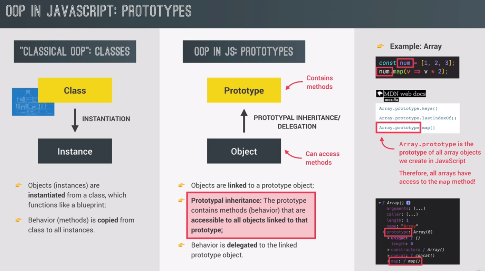
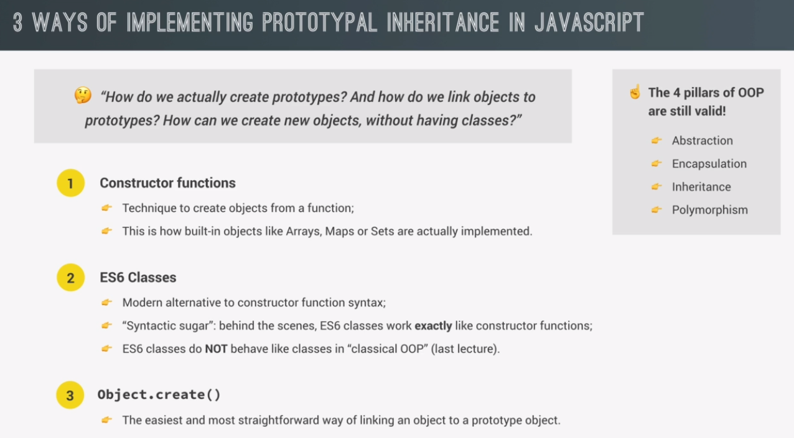

the classical Object-Oriented Programming model with classes and instances created from these classes.
And in the same way, the theoretical class can be used to create actual objects which are called instances and which we can then use in our cout. And this process of creating an instance is called instantiation.
in JavaScript things work a bit differently. So why did I first tell you about classes and instances? Well, it's because we do have similar concepts in JavaScript and so it's very useful to first understand the class instance model. Plus, many people also just use this terminology in the context of JavaScript. And finally, JavaScript syntax itself uses also some of these terms for example, instances. And so, you really need to know what a class is and what an instance is.
in JavaScript we have something called prototypes and all objects in JavaScript are linked to a certain prototype object. So we say that each object has a prototype.
the prototype object contains methods and properties that all the objects that are linked to that prototype can access and use. And this behavior is usually called prototypal inheritance.
prototypal inheritance means that all objects that are linked to a certain prototype object can use the methods and properties that are defined on that prototype.
objects inherit methods and properties from the prototype which is the reason why this mechanism is called prototypal inheritance. Just note that this inheritance is actually different from the inheritance that we talked about in the last lecture.
The classical example is where one class inheriting from another class. But in this case, it's basically an instance inheriting from a class. So that's very different and so keep that in mind
we can also say that objects delegate behavior to the linked prototype object. And behavior is just another term for methods here.
besides prototypal inheritance, we also call this mechanism, delegation.
that's also the reason why this arrow is pointing upwards because technically, objects delegate their behavior to the prototype.
On the other hand, in classical OOP with classes, the behavior, so the methods, are actually copied from the class to the object and so that is completely different.
3 ways:
constructor functions are a way of creating objects programmatically, using a function which will also set the new object's prototype. And this is actually how built-in objects like arrays or maps or sets are implemented. Also, this is how OOP has been done in JavaScript basically since the beginning.
the ES6 release introduced classes into JavaScript. And so now, ES6 classes are actually the more modern way of doing OOP in JavaScript. However, keep in mind that these are actually not the kind of classes that we talked about in the last lecture and in the last slide. They are instead just so called 'synthetic sugar' over constructor functions. So this means that ES6 classes are basically just a layer of abstraction over constructor functions.
So, it's really just a nicer syntax that makes it easier for newcomers to do OOP in JavaScript. But behind the scenes, ES6 classes are actually implemented with constructor functions. And so they also use prototypal inheritance just like we learnt in the last slide.
object.create() which is basically the easiest and most straightforward way of linking an object to a prototype object. However, it's not as used as the other two methods
